Dokumentasi Instalasi & Konfigurasi Framework Laravel.
Dibuat : 13 Mei 2026
Repository GitHubLaravel adalah framework PHP open-source yang populer dengan arsitektur MVC (Model-View-Controller). Framework ini menawarkan berbagai fitur unggulan seperti Eloquent ORM untuk pengelolaan database yang intuitif dan Blade Templating Engine untuk desain antarmuka yang dinamis.
Memudahkan interaksi dengan database menggunakan sintaks PHP yang intuitif. Anda dapat mendefinisikan model untuk setiap tabel database dan melakukan operasi CRUD (Create, Read, Update, Delete) dengan mudah. Eloquent juga mendukung relasi antar tabel (one-to-one, one-to-many, many-to-many).
Sistem templating yang sederhana namun powerful, memungkinkan Anda menggunakan sintaks PHP dalam template HTML dengan cara yang bersih dan aman. Blade menyediakan direktif-direktif seperti @if, @foreach, @extends, @yield, dan komponen untuk membuat tampilan dinamis.
Command-line interface (CLI) yang disertakan dengan Laravel. Artisan menyediakan banyak perintah berguna untuk otomatisasi tugas-tugas umum seperti membuat model, migration, controller, seeder, menjalankan pengujian, membersihkan cache, dan banyak lagi.
Sistem perutean yang fleksibel memungkinkan Anda mendefinisikan URL aplikasi Anda dan mengaitkannya dengan controller atau closure functions. Laravel mendukung berbagai jenis rute dan middleware untuk mengontrol akses.
Praktikum ini bertujuan untuk menyiapkan lingkungan pengembangan hingga project berhasil dijalankan.
Install Tools : PHP, XAMPP atau Laragon, Git, Composer, Node, IDE Visual Studio Code.
1. Pengecekan Seluruh Requirement Laravel:
- Memastikan PHP minimal versi 8.2 untuk menjalankan Laravel
12.
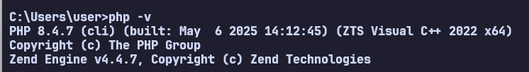
- Composer berfungsi sebagai pengelola dependensi PHP. Tanpa ini,
kita tidak bisa menginstal Laravel Installer maupun library tambahan nantinya.
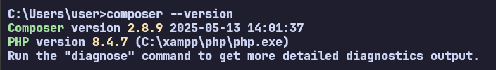
- Git berfungsi sebagai version control dan integrasi ke
github.
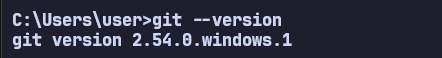
- Node.js berfungsi sebagai runtime environment untuk menjalankan
aplikasi JavaScript di sisi server.
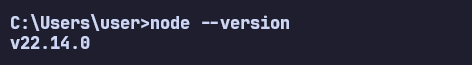
- NPM (Node Package Manager) berfungsi mengelola library
JavaScript dan CSS.
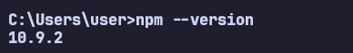
- XAMPP untuk membuat database localhost dan menjalankan PHP.
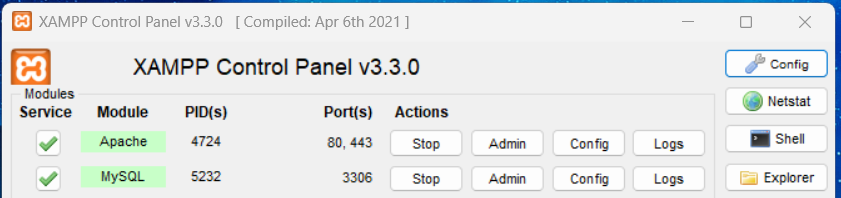
2. Instalasi Laravel Installer Global
- Dengan menginstal installer secara global, kita bisa membuat
project baru hanya dengan perintah laravel new, tanpa perlu mengetik
perintah Composer yang panjang setiap saat.
Download installer Laravel menggunakan composer.
Command :
composer global require laravel/installer
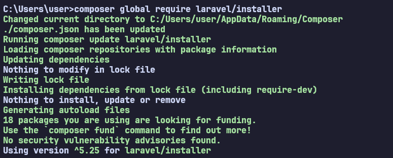
3. Membuat project laravel
Ada beberapa cara membuat project laravel.
- Cara 1 : Menggunakan Laravel Installer dengan perintah :
laravel new nama_project
- Cara 2 : Menggunakan Composer dengan perintah :
composer create-project laravel/laravel=^versi nama_project --prefer-dist
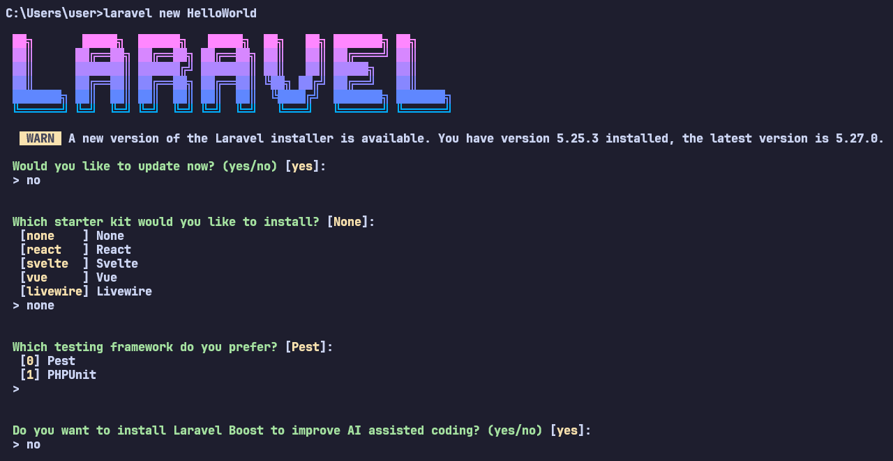
*Note : Database
Pastikan database sudah dibuat, baik secara otomatis saat
awal pembuatan project atau dibuat manual. Jika dibuat manual maka command :
php artisan migrate.
4. Project Framework Laravel
Berhasil membuat project framework Laravel. Masuk ke routes >
web.php lalu buat "Hello Word"
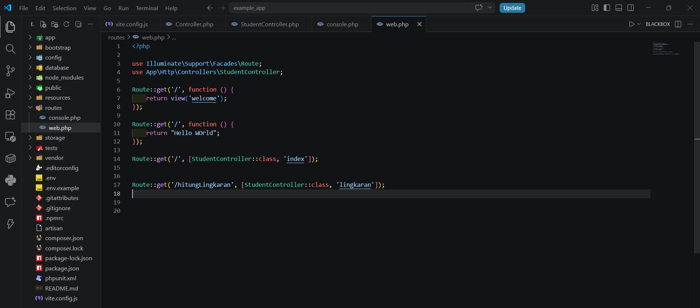
5. Menjalankan website project
Untuk menampilkan laman website dari project laravel, command :
php artisan serve, lalu tekan url untuk start server.
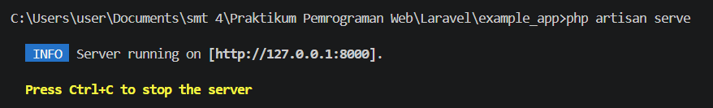
6. Berhasil Menampilkan Halaman Website Project Laravel
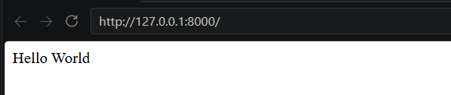
Praktikum berhasil menunjukkan alur dasar bekerja dengan framework Laravel. Dengan instalasi dan konfigurasi yang benar, aplikasi Laravel dapat berjalan dengan lancar dan siap dikembangkan lebih lanjut menjadi website dinamis.